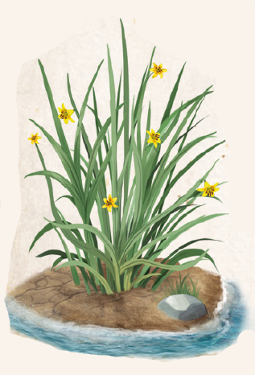

Carlog gedeiht an Küsten von Meer und See, an Flussufern, sowie in Brackwassersümpfen, kommt also in Salz- wie Süßwasser vor. Die recht unscheinbare Pflanze besteht aus dünnen, aufrechten Halmen, die in dichten Horsten wachsen und selten über einen halben Schritt hoch werden. Ihre Blütezeit währt von Peraine bis Efferd. Die blassgelben Blüten ähneln denen von Liliengewächsen und sind regelmäßig ausgebildet. Sie zeigen sich nicht an der Spitze eines Halms, sondern unterhalb davon, gerne auch mittig oder im unteren Drittel. Der wirksame Teil des Gewächses ist der Stempel der Blüte. Er enthält einen Wirkstoff, der die Pupillen weitet und die Empfindlichkeit der Netzhaut erhöht, was zu einer verbesserten Nachtsichtfähigkeit führt. Um diese Wirkung zu entfalten, müssen entweder ein bis zwei rohe Blüten oder mindestens fünf in Alkohol eingelegte Stempel eingenommen werden. Letzteres ist als Carlog-Essenz bekannt und begehrt, denn wenngleich die Wirkung gegenüber frischen Blüten geringer ausfällt, ist sie deutlich länger haltbar und darum leichter zu handhaben.
Bei Nacht bisweilen ein Segen, sorgt eine Einnahme bei Tag dafür, dass Sonnenlicht als schmerzhaft grell empfunden wird. Dies führt zu heftigen Kopfschmerzen bis hin zu einer zeitweiligen Erblindung. Gerüchteweise bedient sich die Heilige Inquisition der Praioskirche genau dieser Wirkung, um bei ihrer Suche nach der Wahrheit Frevlern die unwiderstehliche Kraft ihres Gottes schmerzhaft vor Augen zu führen und Reue in ihnen zu erwecken. In Mhanadistan ist eine verdünnte Version der Carlog-Essenz recht beliebt, gelten geweitete Pupillen doch als verführerisch, wie auch als Zeichen eines wachen Geistes.
Verbreitung:
Landschaftstyp: Grasländer, Heiden und Steppen, Sümpfe, Marschen und Moore, Wälder
Regionen: Nördliche und Südliche Feuchtländer sowie überall an Küsten, See- und Flussufern (ganze Westund Ostküste, dort vor allem um Vallusa)
Suchschwierigkeit: -1
Bestimmungsschwierigkeit: -1
Anwendungen: 1/2/3/4/5/6
Wirkung:
Roh:
Berührung: keine
Einatmung: keine
Verzehr: Vorteil Dunkelsicht I für 1 Stunde, wenn bereits vorhanden Dunkelsicht II.
Bei Tageslicht Sichtmodifikator Stufe 1, bei besonders hellem Licht zusätzlich 1 Stufe Verwirrung (Blüte)
Verarbeitet: siehe Rezepte
Preis: 2 / 2,2 Silbertaler
Rezepte:
Elixiere: Eulentränen
Alchimistische Rauschmittel: Katzenaugensalbe
Volksbrauchtum: Hat die Augenklappe bei Schiffsmannschaften noch nicht abgelöst, da vor allem nachts bei Sternenhimmel von seltsamen, unheimlichen Sichtungen am Himmel berichtet wird, die nur lichtempfindliche Augen wahrnehmen.
Abergläubische Seefahrer schrecken davor oft zurück oder befürchten den Beginn langfristiger Schäden an ihren Augen.
Haltbarkeit:
Roh: siehe Haltbarmachung
Verarbeitet: Carlog-Essenz 12 Monate